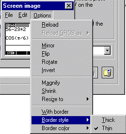

The Options Menu
The Options menu allows some degree of control over the captured image.
Reload will restore the original image if you have transformed it in a way that you now regret.
Reload GROB as... does ???
Mirror reflects the image about a vertical line.
Flip reflects the image about a horizontal line.
Rotate will rotate the image 90 degrees anti-clockwise.
Invert creates a negative image, exchanging black & white.
Magnify doubles the size of the image and Shrink halves it.
Resize to... has two options of Standard size, which restores the original dimensions, and Custom, which allows you to dilate the image to any chosen dimensions.
With border places a one pixel width black border around the image. Other border options are available using the Border style... (Thick/thin) or Border colour... (Black/white) options.